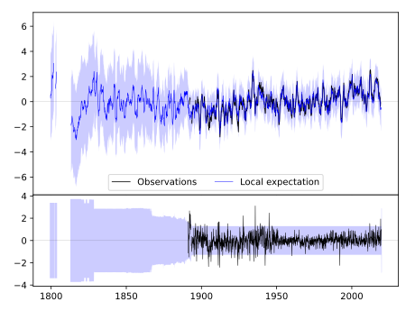
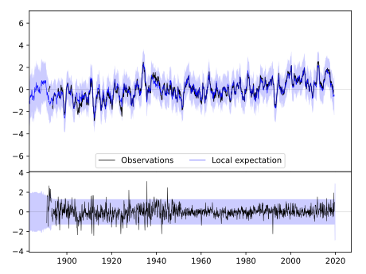
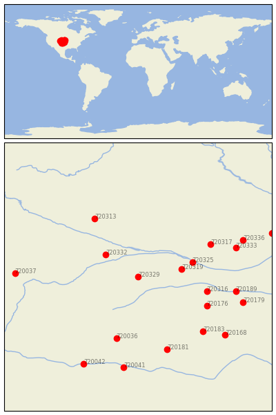

IMPERIAL [USA]


| Neighbour | Name | Country | Distance | Lon/Lat | Years |
|---|
| 720329 | IMPERIAL | USA | 0 | -101.7, 40.5 | 1890-2019 |
| 720332 | LODGEPOLE | USA | 100 | -102.6, 41.1 | 1893-2019 |
| 720319 | CURTIS 3NNE | USA | 103 | -100.5, 40.7 | 1893-2019 |
| 720325 | GOTHENBURG | USA | 134 | -100.2, 40.9 | 1893-2019 |
| 720316 | BEAVER CITY | USA | 167 | -99.8, 40.1 | 1890-2019 |
| 720176 | NORTON 9SSE | USA | 184 | -99.8, 39.7 | 1893-2019 |
| 720317 | BROKEN BOW 2 W | USA | 195 | -99.7, 41.4 | 1893-2019 |
| 720036 | CHEYENNE WELLS | USA | 195 | -102.3, 38.8 | 1889-2019 |
| 720313 | ALLIANCE 1WNW | USA | 204 | -102.9, 42.1 | 1889-2019 |
| 720183 | WAKEENEY | USA | 226 | -99.9, 39.0 | 1883-2019 |
| 720181 | SCOTT CITY | USA | 232 | -100.9, 38.5 | 1889-2019 |
| 720189 | FRANKLIN | USA | 233 | -99.0, 40.1 | 1890-2019 |
| 720333 | LOUP CITY | USA | 243 | -99.0, 41.3 | 1893-2019 |
| 720179 | SMITH CTR | USA | 258 | -98.8, 39.8 | 1888-2019 |
| 720336 | NORTH LOUP | USA | 267 | -98.8, 41.5 | 1888-2019 |
| 720168 | HAYS 1 S | USA | 271 | -99.3, 38.9 | 1885-2019 |
| 720041 | HOLLY | USA | 280 | -102.1, 38.0 | 1893-2019 |
| 720037 | FT COLLINS | USA | 287 | -105.1, 40.6 | 1873-2019 |
| 720042 | LAS ANIMAS | USA | 296 | -103.2, 38.1 | 1867-2019 |
| 720312 | ALBION | USA | 337 | -98.0, 41.7 | 1892-2019 |